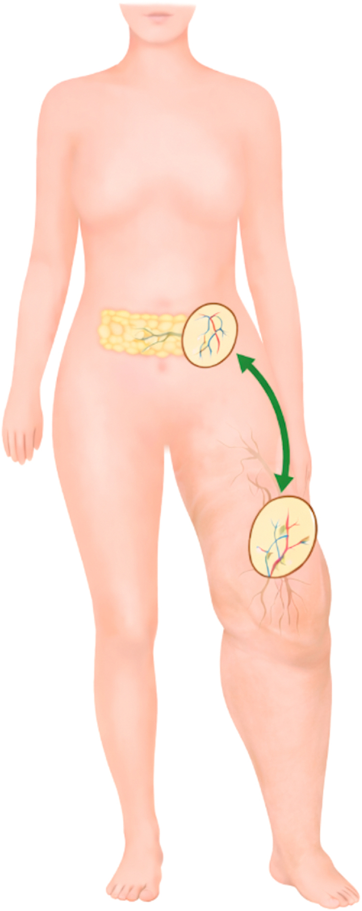
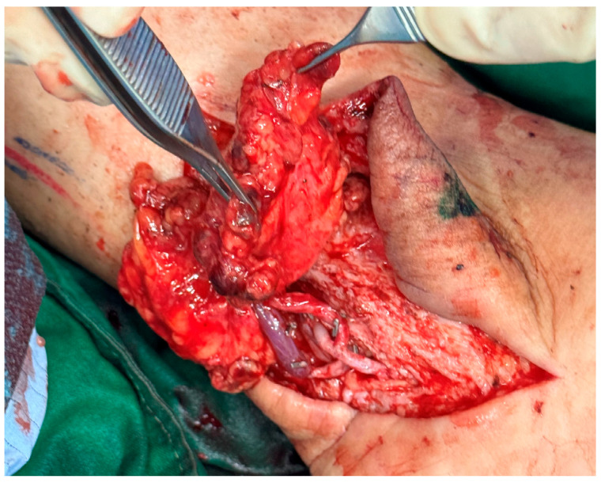
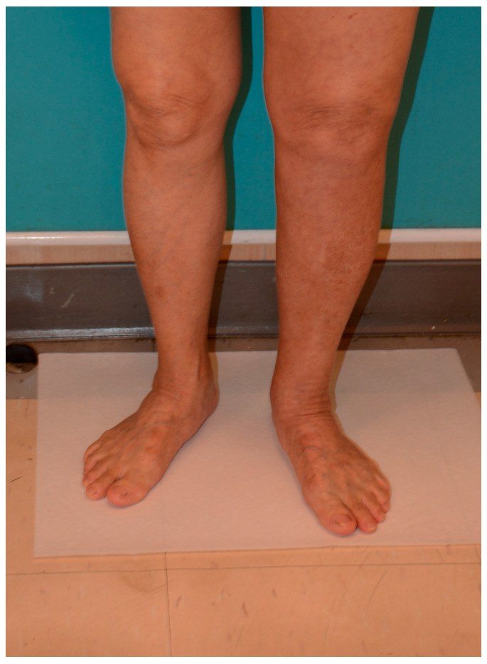
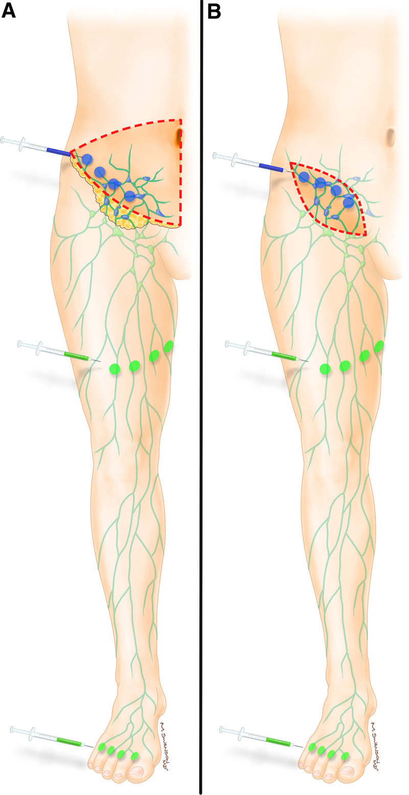

1858 — Ghép hạch bạch huyết có cuống mạch (VLNT) khi LVA không còn mạch: chọn vùng cho – vùng nhận, bản đồ ngược & kết cục
Tags: pattern:phu-chi vung:chi-duoi vung:chi-tren anatomy:hach-bach-huyet protocol:ICG-lymphography protocol:lymphoscintigraphy protocol:CTA score:ISL score:Clavien-Dindo
Mức chắc chắn (certainty): tổng hợp y văn (literature synthesis) — tự biên từ phân tích gộp 395 bệnh nhân/25 nghiên cứu VLNT chi dưới (J Plast Reconstr Aesthet Surg 2026, PMC13384956, CC BY-NC-ND), phân tích gộp 52 nghiên cứu so LVA – VLNT – phối hợp (Microsurgery 2025, PMC11895410, CC BY), đoàn hệ 161 bệnh nhân chọn vùng cho/vùng nhận (Plast Reconstr Surg Glob Open 2026, PMC13061529, CC BY-NC-ND), 53 bệnh nhân vạt hạch mạch vị mạc nối (Medicina 2025, PMC11944203, CC BY) và 25 bệnh nhân bản đồ bạch huyết ngược hai chất đánh dấu (Plast Reconstr Surg Glob Open 2022, PMC9278919, CC BY-NC-ND). Không gắn một ca nguyên văn duy nhất của riêng bài.
Bài này là "nấc thứ hai" của nhóm can thiệp bạch huyết, nối tiếp 1855 – LVA & chuyển hướng dòng ống ngực. 1855 đã chốt điều kiện để nối bạch mạch – tĩnh mạch (LVA): phải còn kênh bạch huyết tuyến tính, còn dòng chảy, còn đường thoát. Nhưng ở giai đoạn muộn, hình ảnh học chỉ còn dermal backflow ("stardust", "splash") — không có kênh nào để nối. Khi đó lựa chọn không phải là "hết cách" mà là mang một đơn vị hạch có cuống mạch đến (VLNT).
Câu chốt: LVA sửa "đường ống" đã có; VLNT cấy thêm "máy bơm" mới. VLNT đưa 2–4 hạch kèm cuống động – tĩnh mạch vào vùng phù; hạch ghép vừa hút dịch vừa kích thích tạo mạch bạch huyết mới (VEGF-C) nối vào hệ bạch huyết nhận. Kết cục gộp trên 395 bệnh nhân chi dưới: giảm chu vi 24,79% trên gối / 29,50% dưới gối, giảm thể tích chi 25,32%, giảm rõ số đợt viêm mô tế bào (p < 0,001), biến cố bất lợi 12,22–16,3% (PMC13384956). So với LVA, mức cải thiện lâm sàng của VLNT cao hơn: 41,66% vs 29,44% ở chi trên và 39,53% vs 31,87% ở chi dưới (PMC11895410).
1. Tổng quan bệnh học – cơ chế hình ảnh
- Phù bạch huyết là bệnh của "lưu lượng > khả năng vận chuyển", không phải bệnh của áp lực tĩnh mạch. Dịch kẽ giàu protein được đẩy về tuần hoàn qua mao mạch bạch huyết → mạch góp → hạch → ống ngực. Khi hạch bị lấy/xạ (ung thư vú, ung thư phụ khoa, melanoma) hoặc bẩm sinh, khả năng vận chuyển giảm; protein ứ lại kéo nước theo → phù mềm, ấn lõm (pitting) lúc đầu, rồi xơ hóa + mô mỡ tăng sinh → phù cứng, không lõm (non-pitting). Dấu Stemmer (không nhấc được nếp da mu chân) dương khi đã xơ hóa.
- Vì sao VLNT có tác dụng — hai cơ chế song song, chưa tách bạch được trên người:
- "Bể hút" (sink): hạch ghép được nối vào động – tĩnh mạch tại chỗ nên tạo ra gradient áp lực hút dịch kẽ vào mao mạch hạch ghép rồi về tuần hoàn.
- Tạo mạch bạch huyết (lymphangiogenesis): hạch ghép được cho là tiết VEGF-C/VEGF-D, kích thích mọc kênh bạch huyết mới nối vào hệ nhận. Bằng chứng gián tiếp: xạ hình bạch huyết sau ghép thấy đường dẫn lưu mới và giảm dermal backflow, trong khi số hạch ghép chỉ 2–4 — quá ít để giải thích toàn bộ 25–30% giảm chu vi nếu chỉ bằng "hút".
- TẠI SAO hình ảnh quyết định lựa chọn phẫu thuật: LVA cần "đường ống" — trên ICG lymphography phải thấy kênh tuyến tính (linear pattern) chạy qua vùng phù; nếu chỉ thấy dermal backflow (dạng splash → stardust → diffuse) thì không có lòng mạch để nối, và đây là chỉ định của VLNT. Đây là lý do không được chỉ định mổ bằng cảm nhận "phù lâu năm".
- Vật lý của ICG: huỳnh quang hồng ngoại gần ~800 nm, xuyên mô chỉ 1,5–2 cm (PMC9278919) → chỉ thấy bạch huyết nông; hạch sâu/vùng bẹn dày mỡ không thấy → phải phối hợp xạ hình hạt keo (lymphoscintigraphy) và siêu âm/CTA. Xạ hình 99mTc-nanocolloid cho định lượng vận chuyển (thời gian xuất hiện hạch, transport index, dermal backflow) nhưng độ phân giải thấp — hai kỹ thuật bổ sung, không thay thế.
- Vì sao phải đo bằng chu vi ở nhiều mốc: phù bạch huyết không đều theo trục chi; đo mỗi 10 cm từ gót lên và tính thể tích chi (perometry/volumetry). Trong phân tích gộp, giảm chu vi trên gối (24,79%) khác dưới gối (29,50%) — nếu chỉ đo một mốc sẽ đánh giá sai kết quả (PMC13384956).
- Con số nền của bệnh nhân trong các nghiên cứu: thời gian phù trước mổ 6,60 ± 2,84 năm, BMI 26,6 ± 1,49 kg/m², theo dõi trung bình 26,1 ± 13,1 tháng (PMC13384956) — tức đây là nhóm phù đã xơ hóa, thất bại điều trị bảo tồn, không phải phù cấp.
2. Mẫu hình + chẩn đoán phân biệt theo vị trí (gamut)
Mẫu hình cần nhận ra: phù một chi, không đau, không lõm (giai đoạn muộn), nặng dần nhiều năm, có tiền sử lấy hạch/xạ, ICG chỉ có dermal backflow hoặc xạ hình thấy ứ trệ/không thấy hạch vùng → không còn kênh cho LVA → cân nhắc VLNT.
- Theo hình ảnh bạch huyết (quyết định kỹ thuật):
- Kênh tuyến tính còn thông → LVA (nối 1–3 chỗ).
- Dermal backflow lan tỏa, không kênh tuyến tính → VLNT.
- Không thấy hạch/không có đường dẫn lưu + xơ hóa dày → VLNT ± hút mỡ (SAL); đôi khi cần nối bắc cầu ống ngực nếu tổn thương trung tâm (bài 1855/1822).
- Theo nguyên nhân: sau điều trị ung thư vú (chi trên, bài 593); sau ung thư phụ khoa/melanoma bẹn (chi dưới); nguyên phát (thiểu sản/hypoplasia); do ký sinh trùng (filaria); béo phì – suy tĩnh mạch (thể phối hợp).
- Theo vị trí vùng nhận (có số liệu):
- Chi trên: đặt nách cho kết quả nhanh và nhiều hơn đặt cẳng tay xa (nách 94,7% số ca chi trên trong đoàn hệ 161 bệnh nhân) (PMC13061529).
- Chi dưới: đặt cẳng chân tốt hơn bẹn (62,1% vs 31,0% vị trí trong đoàn hệ) (PMC13061529); trong phân tích gộp, 81,6% vạt được đặt ở cổ chân/chi dưới xa (PMC13384956).
- Theo vùng cho (đánh đổi):
- Mạc nối – vị mạc nối (gastroepiploic): cuống dài, sẹo giấu trong ổ bụng, kết cục chu vi tốt nhất trong phân tích gộp (p = 0,002 trên gối; p < 0,001 dưới gối), nhưng cần nội soi ổ bụng và có nguy cơ rò dưỡng chấp/xoắn dạ dày (PMC13384956, PMC11944203).
- Dưới cằm (submental): hạch nhỏ, sẹo vùng cổ, nguy cơ tổn thương nhánh hàm mép thần kinh mặt; chiếm 55,0% vùng cho trong phân tích gộp chi dưới.
- Bẹn (groin/SCIA): dễ lấy, nhưng nguy cơ phù chi cho — đây là vùng cho phải làm bản đồ ngược.
- Ngực bên (lateral thoracic)/thượng đòn: nguy cơ phù tay cho, tràn khí màng phổi, tổn thương đám rối.
3. Bảng so sánh phân biệt (ma trận đối chiếu)
| Thực thể (entity) | Hình ảnh điển hình | Chốt vào (rule-in) | Chốt loại (rule-out) | Gợi ý xác nhận |
|---|---|---|---|---|
| VLNT (ghép hạch có cuống mạch) | Dermal backflow lan tỏa, không kênh tuyến tính; chi phù cứng; sau ghép thấy đường dẫn lưu mới | Không còn kênh cho LVA + thất bại ≥ 6 tháng điều trị bảo tồn + còn mô mềm mềm để đặt vạt | Nhiễm trùng cấp/loét đang hoạt động, huyết khối tĩnh mạch sâu, tái phát u chèn ép, chi đã xơ hóa – loét không còn chỗ nhận | ICG + xạ hình; CTA mạch nhận; đo chu vi/thể tích trước mổ |
| LVA (nối bạch mạch – tĩnh mạch) | Kênh tuyến tính rõ, chảy chậm, đường kính 0,3–0,8 mm | Còn ≥ 1 kênh tuyến tính có dòng chảy + chênh lệch chu vi còn đo được | Chỉ có dermal backflow ("stardust") → không nối được | ICG: đánh dấu đường rạch theo kênh; siêu âm 20–50 MHz |
| Hút mỡ (suction-assisted lipectomy, SAL) | Chi to do mô mỡ, phù không lõm, không đau; mỡ dưới da dày trên MRI | Thể tích mỡ chiếm ưu thế sau khi kiểm soát phù | Phù còn ướt, còn lõm, chưa ổn định → hút mỡ sẽ tái phù | MRI/CT đo mỡ; cân nhắc SAL + VLNT cùng thì |
| Điều trị bảo tồn (CDT: nén – dẫn lưu – tập) | Không có tổn thương mạch; phù giảm khi nén | Bắt buộc trước mọi phẫu thuật; đáp ứng = chu vi giảm/ổn định | Không dung nạp nén, nhiễm trùng da → xử lý trước | Đo chu vi trước/sau 4–6 tuần |
| Lipedema | Hai chi dưới đối xứng, bàn chân KHÔNG phù, đau khi ấn, dễ bầm | Phù đối xứng + bàn chân bình thường + đau | Phù một bên, có tiền sử lấy hạch → nghĩ bạch huyết | Siêu âm mô mỡ; không đáp ứng phẫu thuật bạch huyết |
| Phù tĩnh mạch mạn | Phù mềm, có lõm, giảm khi kê cao, da nâu – xơ – loét quanh cổ chân | Suy tĩnh mạch trên siêu âm Doppler + hồi lưu | Stemmer âm, ICG có kênh bình thường → không phải bạch huyết | Doppler tĩnh mạch, đo áp lực tĩnh mạch |
| Tái phát u chèn ép | Khối vùng chậu/bẹn, phù tiến triển nhanh, đau, có thể giãn mạch | Khối + hạch mới + phù tăng nhanh trong vài tuần | Phù nhiều năm, không khối → bạch huyết nguyên phát/thứ phát | CT/MRI/PET; không mổ bạch huyết trước khi loại trừ |

Sơ đồ nguyên lý: vạt hạch mạch vị mạc nối (gastroepiploic) lấy qua nội soi, đưa xuống chi phù; ô tròn phóng to = bó mạch nuôi hạch. Nguồn: PMC13384956, CC BY-NC-ND 4.0 (nguyên bản, không crop/ghép).
Ba con số quyết định tư vấn
- 24,79% / 29,50%: giảm chu vi trung bình trên gối / dưới gối sau VLNT chi dưới (395 bệnh nhân) — kỳ vọng thực tế, không phải "hết phù" (PMC13384956).
- 41,66% vs 29,44% (chi trên) và 39,53% vs 31,87% (chi dưới): mức cải thiện lâm sàng gộp của VLNT vs LVA — VLNT không kém LVA về kết cục, nhưng khác chỉ định (PMC11895410).
- 1,6%: tỉ lệ phù chi cho khi lấy vạt bẹn (24 nghiên cứu) — và 0/25 khi có bản đồ ngược hai chất đánh dấu; đây là lý do bản đồ ngược là bắt buộc, không phải "tùy chọn" (PMC9278919).
4. Protocol + hệ phân độ/điểm chuẩn hóa
- Bước 1 — xác nhận phù bạch huyết (không phải phù tĩnh mạch/mỡ): hỏi tiền sử lấy hạch, xạ trị, nhiễm trùng, du lịch vùng giun chỉ; khám Stemmer, đo chu vi mỗi 10 cm, đo thể tích; siêu âm Doppler tĩnh mạch để loại phù tĩnh mạch; xét nghiệm/tầm soát tái phát u nếu phù tiến triển nhanh.
- Bước 2 — chọn kỹ thuật bằng hình ảnh:
- ICG lymphography: tiêm 0,1–0,2 mL ICG nội bì ở kẽ ngón/khoảng gian đốt; chụp hồng ngoại gần sau 10–30 phút; ghi pattern tuyến tính / splash / stardust / diffuse và dermal backflow. Có kênh tuyến tính → LVA; chỉ dermal backflow → VLNT.
- Xạ hình bạch huyết (99mTc-nanocolloid): đánh giá vận chuyển và ứ trệ, phát hiện dermal backflow, so sánh hai chi; hữu ích khi ICG không thấy vì mô mỡ dày.
- DCMRL khi nghi tổn thương trung tâm/ống ngực (bài 1822).
- Bước 3 — chọn vùng cho: ưu tiên hạch mạch vị mạc nối nếu có kinh nghiệm nội soi (kết cục chu vi tốt nhất, sẹo giấu) — nhưng phải loại trừ bệnh dạ dày, dính ổ bụng, béo phì nặng; dưới cằm cho chi trên; bẹn chỉ khi làm bản đồ ngược và không có phù chi cho.
- Bước 4 — bản đồ ngược (reverse lymphatic mapping), bắt buộc với vạt bẹn/ngực bên: tiêm ICG + xanh methylene (hoặc isosulfan) ở ngón chân/bàn chân để nhuộm đường dẫn lưu của CHI; chỉ lấy hạch của vùng thân mình, giữ lại hạch của chi. Kết quả: 0/25 phù chi cho, 92% vết mổ liền tốt, 1 ca hoại tử da do xanh methylene (1,25% nguy cơ chung) (PMC9278919).
- Bước 5 — phẫu thuật: lấy 2–4 hạch kèm cuống; nối động mạch 1,0–1,5 mm và tĩnh mạch; đặt vạt dưới da, không căng, hướng trục chi; không đặt trên khớp nếu có thể. Với chi dưới, vị trí nhận cẳng chân/cổ chân cho kết quả tốt hơn bẹn (PMC13061529).
- Bước 6 — theo dõi: nén 4–6 tuần, tập phục hồi, đo chu vi/thể tích tại 1, 3, 6, 12, 24 tháng, đếm số đợt viêm mô tế bào/năm, chụp xạ hình/ICG lại 6–12 tháng; phân độ biến chứng theo Clavien–Dindo; không có ngưỡng "đáp ứng" đồng thuận — dùng giảm ≥ 10% chu vi làm mốc báo cáo nội bộ, không phải tiêu chuẩn quốc tế.
flowchart TD
A[Phù chi mạn, thất bại nén ≥ 6 tháng] --> B{Doppler tĩnh mạch bình thường?}
B -->|Không| C[Điều trị suy tĩnh mạch]
B -->|Có| D[ICG lymphography + xạ hình]
D --> E{Có kênh tuyến tính?}
E -->|Có| F[LVA: nối 1–3 vị trí]
E -->|Không, chỉ dermal backflow| G{Mô mềm còn đủ, không nhiễm trùng?}
G -->|Không| H[Tối ưu bảo tồn / hút mỡ / chăm sóc]
G -->|Có| I[VLNT: chọn vùng cho theo bảng]
I --> J[Vạt bẹn/ngực bên: bản đồ ngược BẮT BUỘC]
J --> K[Nối mạch + đặt vạt dưới da]
K --> L[Nén 4–6 tuần + đo chu vi 1/3/6/12/24 tháng]
5. Biến thể bình thường và cạm bẫy
- Cạm bẫy 1 — "phù lâu năm = phải VLNT": sai. Phù tĩnh mạch mạn và lipedema cũng phù nhiều năm; VLNT không có chỉ định và có thể làm nặng hơn (phù do tăng áp tĩnh mạch, không do thiếu vận chuyển). Luôn Doppler + Stemmer + hình ảnh bạch huyết trước.
- Cạm bẫy 2 — bỏ qua bản đồ ngược: lấy hạch bẹn "đại diện" mà không nhuộm đường dẫn lưu của chi → phù chi cho. Tỉ lệ phù chi cho 1,6% trên y văn, nhưng 0% khi có bản đồ ngược; đánh đổi này không đáng để tiết kiệm 15 phút mổ (PMC9278919).
- Cạm bẫy 3 — tưởng VLNT thay thế nén: không. VLNT không chữa xơ hóa/mỡ; sau mổ vẫn cần nén và physio. Ở chi đã xơ hóa nặng, hút mỡ (SAL) hoặc SAL + VLNT cho kết quả thể tích tốt hơn VLNT đơn thuần (PMC11944203).
- Cạm bẫy 4 — vạt mạc nối ở bệnh nhân bụng đã mổ: dính, không lấy được cuống đủ dài; nguy cơ xoắn dạ dày, rò dưỡng chấp. Phải có CTA mạch và nội soi đánh giá trước.
- Cạm bẫy 5 — đọc ICG sai: ICG chỉ xuyên 1,5–2 cm; ở chi dày mỡ, không thấy kênh không đồng nghĩa không có kênh. Nếu ICG âm nhưng xạ hình còn vận chuyển, đừng vội kết luận "hết mạch" — siêu âm tần số cao/khám lại.
- Cạm bẫy 6 — viêm mô tế bào quanh vạt: đỏ – nóng – đau sau mổ có thể là nhiễm trùng vạt (bài 1689), huyết khối tĩnh mạch vạt (7,44% trong phân tích gộp) hoặc viêm mô tế bào của bệnh lý nền; không dùng kháng sinh mù mà siêu âm Doppler vạt + đánh dấu vùng đỏ.
- Biến thể bình thường: hạch bẹn to, đau thoáng qua sau lao động/chấn thương; đường bạch huyết bắt màu ICG kéo dài ở người gầy; phù nhẹ cổ chân hai bên ở người đứng lâu — không phải chỉ định mổ.
6. Tự lượng giá — Blind Quiz ngay trên trang tĩnh
Ca 1 — Nữ 56 tuổi, ung thư cổ tử cung mổ + xạ 5 năm trước, phù chân trái 3 năm, đã nén 8 tháng không giảm. Nhìn ảnh mổ, mô tả trước.

- Gợi ý: ICG chỉ thấy dermal backflow, không có kênh tuyến tính; xạ hình ứ trệ.
- Câu hỏi: Vì sao chọn VLNT thay vì LVA? Vạt được đặt ở đâu và vì sao? Ba biến chứng sớm cần nghĩ?
Bấm để hiện đáp án (findings + chẩn đoán)
- Chẩn đoán: phù bạch huyết chi dưới sau điều trị ung thư phụ khoa, không còn kênh cho LVA → VLNT vạt hạch mạch vị mạc nối, đặt ở cổ chân.
- Vì sao: LVA cần kênh tuyến tính; ở đây chỉ có dermal backflow → không có lòng mạch để nối. Đặt cẳng chân/cổ chân cho kết quả tốt hơn bẹn (62,1% vs 31,0% vị trí trong đoàn hệ 161 bệnh nhân; 81,6% vạt trong phân tích gộp đặt ở chi dưới xa).
- Biến chứng sớm: huyết khối/ứ máu tĩnh mạch vạt (7,44% trong gộp), tụ máu (1,77%), mất vạt (2,12%); muộn: phù chi cho nếu lấy vạt bẹn không bản đồ ngược (1,6%).
- Nguồn ảnh: Medicina 2025 (PMC11944203), CC BY 4.0.
Ca 2 — Cùng bệnh nhân, 1 năm sau mổ:

- Câu hỏi: Kết quả này là "thành công" hay "thất bại"? Đo bằng gì? Vì sao không được hứa "hết phù"?
Bấm để hiện đáp án
- Findings: chênh lệch còn 2,6 cm ở giữa đùi, 2,1 cm ở giữa cẳng chân, 1,8 cm ở cổ chân, 1,2 cm ở bàn chân — tức giảm nhưng không hết.
- Đánh giá: VLNT giảm chu vi trung bình 24,79% trên gối / 29,50% dưới gối, giảm thể tích 25,32%; giảm số đợt viêm mô tế bào (p < 0,001). Đây là kết cục điển hình, không phải thất bại.
- Vì sao không hứa hết phù: phẫu thuật không loại bỏ mô xơ/mỡ đã hình thành; mục tiêu là giảm thể tích, giảm nhiễm trùng, cải thiện chức năng, không phải "chi bình thường".
- Nguồn ảnh: Medicina 2025 (PMC11944203), CC BY 4.0 (nguyên bản).
Ca 3 — Bản đồ ngược: tại sao phải tiêm hai chất ở hai vị trí?

- Câu hỏi: Chất xanh và chất huỳnh quang được tiêm ở đâu, để làm gì? Nếu bỏ bước này, biến chứng gì?
Bấm để hiện đáp án
- Nguyên lý: tiêm ICG ở ngón/bàn chân để nhuộm đường dẫn lưu của CHI (cần giữ lại); tiêm xanh methylene/isosulfan ở thân mình để nhuộm hạch của vùng cho (có thể lấy). Nhờ đó giữ hạch của chi, lấy hạch của thân.
- Nếu bỏ: lấy nhầm hạch dẫn lưu chi → phù chi cho (1,6% trên y văn); có bản đồ ngược: 0/25 ca phù, 92% vết mổ liền tốt.
- Cạm bẫy: xanh methylene có thể gây hoại tử da (1,25%); isosulfan gây dị ứng 1,5–3% — hỏi tiền sử dị ứng trước.
- Nguồn ảnh: Plast Reconstr Surg Glob Open 2022 (PMC9278919), CC BY-NC-ND 4.0 (nguyên bản).
Bài liên quan chéo
- 1855 – LVA & chuyển hướng dòng ống ngực khi DCMRL không có đích — nấc trước VLNT
- 1822 – DCMRL (chụp bạch huyết bằng MRI động) — hình ảnh trung tâm
- 593 – Phù bạch mạch chi trên sau điều trị ung thư vú — bối cảnh chi trên
- 1767 – Phù bạch mạch đầu cổ sau xạ — vùng đầu cổ
- 1689 – Nhiễm trùng và hoại tử vạt tự thân sau tái tạo vú — biến chứng vạt
- 901 – Tổng quan can thiệp IR
Ảnh
images/1858_so-do-vlnt_Schematic_PMC13384956.jpg— sơ đồ vạt hạch mạch vị mạc nối, CC BY-NC-ND 4.0, nguyên bản.images/1858_mat-noi-mach_Intraop_PMC11944203.jpg— vạt nối ở cổ chân, CC BY 4.0.images/1858_sau-1-nam_Clinical_PMC11944203.jpg— kết quả 1 năm, CC BY 4.0.images/1858-ban-do-nguoc_Schematic_PMC9278919.jpg— bản đồ ngược hai chất, CC BY-NC-ND 4.0, nguyên bản.- Nguồn + giấy phép từng ảnh:
images/CREDITS.md; nguồn bài:sources.md.
Không dùng để chẩn đoán độc lập khi chưa có người hướng dẫn.